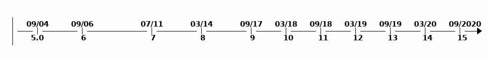

原文地址：Features Java 16 Brings to Developers
原文作者：Živković Miloš
译者：maybelence
Java不需要再做过多介绍。它作为一种编程语言，已经有很多年的发展历史。最近的更新也为该语言带来了几个新的特性：
- 密封类
- 模式匹配
- 其他安全措施。
密封类
密封的目的是限制具体的类。密封将实现控制模式匹配，并提供对模式匹配的支持。
1 | // 这里可以许可的关键字已经密封 |
如果使用基本的接口，那你将不会得到反射，您不会对这些有限的具体实现有细致了解。
当使用密封类的话，你将获取到这个反射行为，您知道自己域中可以拥有的类型。
枚举表明了一组有限的值。密封类表明了一组数量有限的一种值。
1 | sealed interface Celestial |
但是，这种层次结构并不会反映出重要的领域知识，即我们的模型中只有三种。
在这些情况下，限制子类或者子接口的集合可以简化建模。 — JEP-397
对基于值的类的值发出警告
基本类型的包装类是基于值的类，例如：Byte, Short, Integer, Long, Float, Double, Boolean,和 Character。有关基于值的类的更多信息，请参见此处。
由于它们是不可变的对象，因此构造函数对于它们来言是没有任何意义的。
为了防止滥用构造函数，提供@jdk.internal.ValueBased来用于标注作为value-based的类。每次编译器找到基于值的类构造函数时，这都会发出警告。
默认强封装JDK内部元素
这是为了鼓励用户使用标准的Java API。不过，如果您如果需要使用宽松的封装。请尽量避免使用该特性。
您需要将参数添加到JVM的启动器中。在下面您可以看到可能的参数，您可以传入。有关参数的更多信息，请参见此处。
1 | --illegal-access= permit | deny | debug | warn |
尽管JAVA16包含了此功能，但是您可能在更早的版本就遇到了这种问题，这个更改是在JAVA9发布之后提出的。
直至今日，某些构建工具在构建Java项目(Java> = 9)时仍会打印出“反射访问”警告，即使已经成功构建，它们也会感觉“尚未就绪”。 - 出处
模式匹配
模式匹配已经存在很长时间了，你可以在很多编程语言中发现它，例如Elixir。
在JAVA中，存在许多instanceof条件。因为有减少操作的动机从而衍生出了模式匹配。
模式匹配允许简明地表达对象的所需“形状”（模式），并允许各种语句和表达式针对其输入（匹配）来测试“形状”。 — JEP-394
1 | // 很多样板代码 |
使用模式匹配，我们可以获得此代码。减少样板，进行转换，并声明变量。
1 | if (obj instanceof String s) { |
模式变量在它匹配的范围内。因此，这样的代码是有效的。
1 | if (a instanceof Point p) { |
您不必担心变量名。如果范围不同，则可以重用现有名称。
模式匹配改善了什么？？？
可以避免很多显示的转换，让我们用相同的方法，写出可读性更高的代码。
1 | return (o instanceof CaseInsensitiveString) && |
现在看下一个例子，如果instanceof String s的条件为true，则为s分配一个值。相反，如果模式匹配失败，那么s将没有任何值。
因此这个代码完全可以正常执行，不存在语句不可达的情况。如果有条件通过，则s分配值；如果没有通过，则s被安全丢弃。
1 | public void onlyForStrings(Object o) throws MyException { |
总结
Java在不断发展。导致很多重大更改。同时也引入很多问题。

即使这样，我们仍然需要进行调整。使用新特性，以便我们创建更好的软件。这些是我提出的几个新特性。您可以在下面的部分中阅读更多内容。
源码
JEP草案：开关的模式匹配（preview）点此查看
JDK16：JAVA16中的新特性 点此查看

...
...